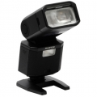

无忌
器材库
全部器材
产品年表
名词百科
榜单
器材库
> 闪光灯 > EF-X500

富士
EF-X500
分类
闪光灯
点评
0 条
图片
0 张
评测
0 篇
这款高端外接热靴式闪光灯“EF-X500”，支持高速同步、TTL自动多重闪光等，进一步拓展了X系列高端相机的拍摄范围。
产品类型
闪光灯
综合评分
暂无评分
无忌评测
暂无评测
规格参数
网友点评
(0)
产品图 / 样片
(0)
评测文章
(0)
详细规格
发布日期
2016-01-15
兼容相机
富士X系列相机
闪光指数
约50（ISO 100、闪光灯覆盖范围设为105mm时）
闪光涵盖范围
24mm - 105mm（相当于35mm格式）、使用广角散光板时约20mm
闪光曝光控制
TTL自动闪光、手动闪光、多重闪光
色温
约5600K
无线闪光
支持
其他特点
支持FP（高速同步）闪光；同X-T1和X-Pro2一样具有出色的防尘、防滴性能，适用于严酷的拍摄环境。
电池
5号电池4节（LR6、FR6或Ni-MH）
尺寸
67.5×123.9×106mm
该产品暂无存档的网友点评
该产品暂无存档的产品图
评测 / 相关文章
该产品暂无存档的评测文章
相关文章
［资讯］富士EF-X500闪灯将在夏季上市
（原站已下线）
［资讯］富士胶片推出全新闪光灯EF-X500
（原站已下线）